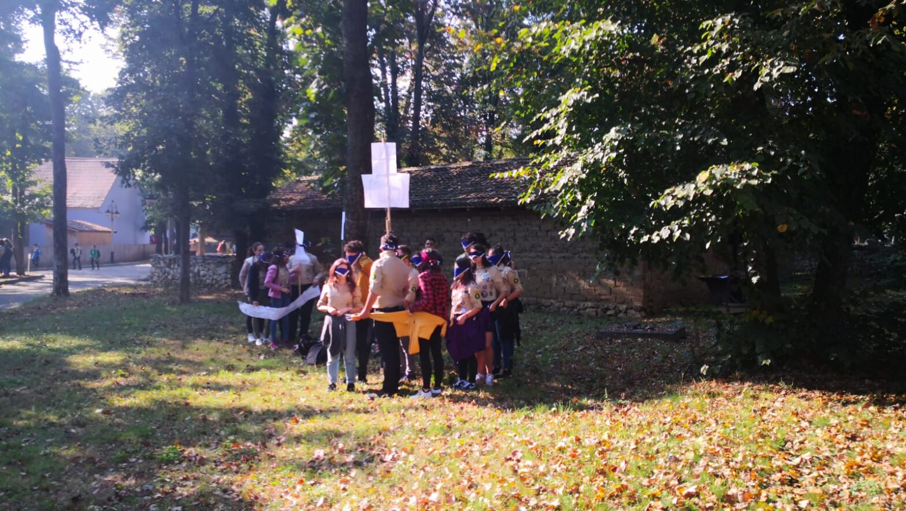

O comunitate unită la DAC București

Dac București 2019 – Go Planet!
Weekendul trecut am participat la primul meu eveniment cercetășesc care s-a extins în afara centrului nostru local, un eveniment despre care am auzit pentru prima oară acum mai mult de un an, dar la care nu am avut curajul să particip până acum: Deschiderea anului cercetășesc din București.
Abia ajunsă la porțile Muzeului Satului, am văzut mai multe cămăși și eșarfe de cercetaș decât văzusem până atunci în viața mea, iar, deși primul meu instinct a fost să mă las pradă fricii de necunoscut, am pășit cu încredere în muzeu, susținută de ceilalți cercetași din jurul meu. Am realizat abia după ce m-am întors acasă că frica mea nejustificată s-a risipit înainte să participăm la prima noastră activitate planificată, fără ca eu măcar să îmi dau seama. Patrula noastră a participat la mai multe activități care ne-au dezvoltat spiritul de echipă, ne-au determinat să ne înțelegem mai bine unii pe alții și să avem încredere în restul patrulei: jocuri de cunoaștere, o probă de construire a unui adăpost, un atelier unde am fost legați la ochi și conduși de unul dintre noi printre copaci și alte patrule.
Fiecare atelier ne propunea o nouă abordare asupra modului în care ne privim atât unii pe alții, cât și pe noi înșine, însă nu atelierele au fost cele care mi-au rămas întipărite în minte, ci atmosfera. Nu au fost activitățile cele care m-au convins să mă întorc la cercetași și după DAC, ci modul în care, pe parcursul a câtorva ore, oameni de toate vârstele și credințele s-au adunat pentru a sărbători o comunitate unită chiar și în diversitate și adversitate.
Monica, aspirant la eXploratori